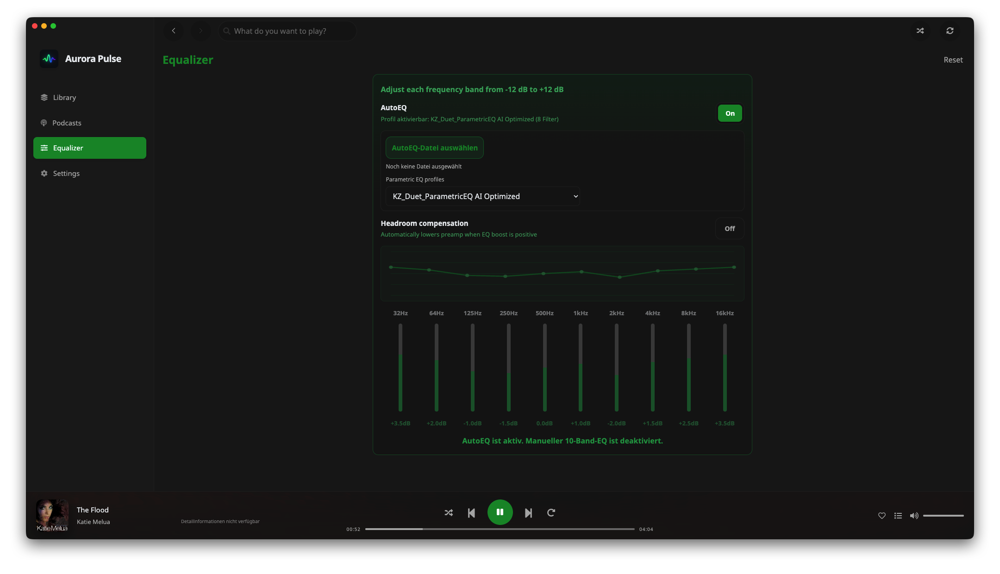
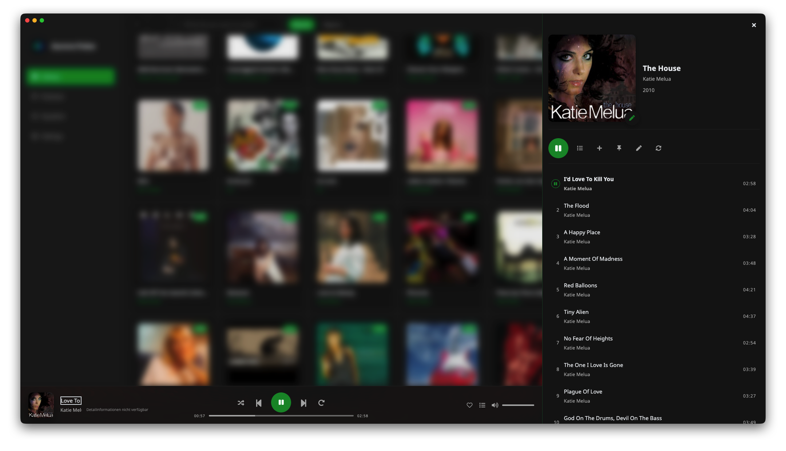
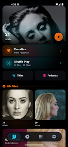
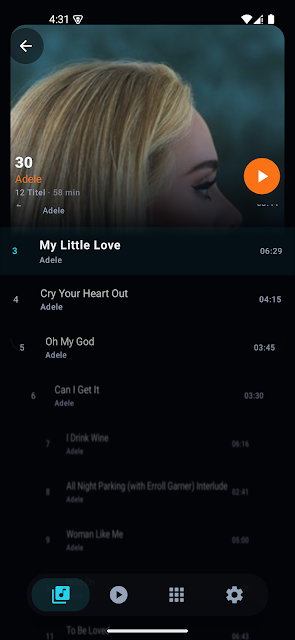
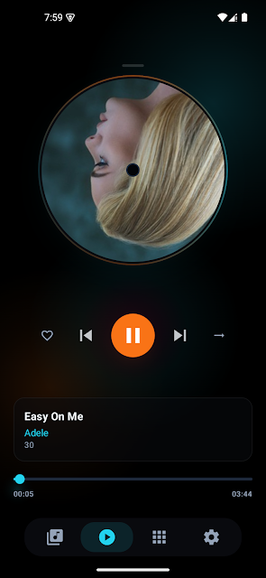
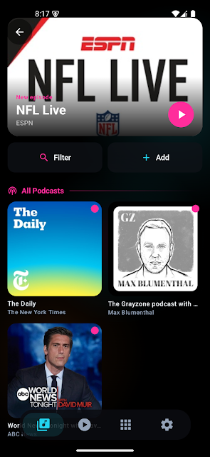
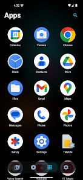

Aurora Pulse · Desktop
Aurora Pulse is a local-first, audiophile-focused desktop player for listeners who own their music. Pair it with Vibe Music & Podcast Launcher on Android and you get one deliberate two-screen story: curate, sync, and drive playback from the desk — slip the same world into your pocket when you walk away.


Two apps with a shared philosophy: your library, your rhythm, without renting your habits back from a cloud. Not two random apps with a logo in common — one ecosystem split across the desk and the commute.
Local-first audiophile player. Curate, tag, equalize, sync. Quality details visible where it matters, transport that stays glued to what you actually hear.
Your home screen is the player. Music and podcasts always one tap away — no detour through a separate app, no algorithm telling you what to listen to next.
Aurora Pulse drives the workflow. Vibe Launcher is the listening surface that travels with you. They’re not two apps with a logo in common — they’re one deliberate two-screen story.
Push music and podcasts to your Android device over ADB — no mounting, no cloud round-trip.
Aurora Pulse is tuned for launcher-friendly remote playback so handoffs feel intentional.
10-band tuning with AutoEQ profiles — repeatable on the desk, predictable in the pocket.
Optionally keep your PC folder tree 1:1 under Music/ on the device. Or fall back to tag-based.
Practical import workflows, reliable metadata, stable sync, and UI decisions that reduce context switching when you move between browsing, queuing, and playback control.
Immediate, confidence-oriented transport. Quality information stays visible — no ambiguity about what is actually being played. Remote-renderer reconciliation keeps local UI and remote state aligned.
Multi-band EQ, AutoEQ profile support, headroom compensation. Repeatable tuning across sessions, not just flexibility.
Albums, artists, tracks, playlists in one coherent navigation model. Sideview detail access, direct playback from search, integrated metadata edits.
Manual curation and smart logic side by side. Robust artwork and sorting in mixed or generated collections.
Copy with progress, ETA, resume, cancellation. ADB resolves writable storage, supports mirror-folder layout, and streams cleanup so huge libraries don’t stall.
v1.5.xDiscovery, subscription management, RSS-driven refresh. Same playback model as your music — switch context without leaving the app.
Archival-quality FLAC workflow with metadata-aware decisions and predictable cover handling. Less post-processing.
Serialized command sequencing per renderer. Calmer transitions. Renderer state stays glued to what you hear.
The DLNA stack is built for living-room and companion devices. The player and the renderer are continuously reconciled so your on-screen queue, transport state, and what's actually playing all tell the same story.
Command sequencing is serialized per renderer to reduce race conditions. Track-to-track transitions are handled with care. Metadata compatibility keeps improving for picky renderers.

An Android launcher that replaces your home screen. Music, podcasts, your apps — under one calm spatial UI. No detour through a separate player, no algorithm telling you what to listen to next.





Vibe Music & Podcast Launcher is live and actively developed. Install it, set it as your default home, and let your music breathe again.
Aurora Pulse is intentionally local-first in both architecture and operating model. Your library data, playback state, and app-level metadata stay on your system. Optional online lookups are used only in explicit metadata workflows. No analytics profiling, no behavioural telemetry.
Direct downloads from GitHub Releases. No bundles, no add-on packaging.
Download the .dmg. Drag AuroraPulse.app to Applications. Apple Silicon & Intel.
Run the .exe installer. SmartScreen: More info → Run anyway.
flatpak install <file>.flatpak or use your Flatpak manager.
Available on Google Play. Replaces your Android home screen with music & podcasts at the front.
→